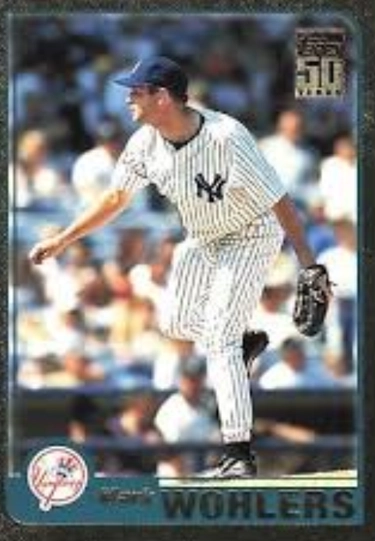

Mark Wohlers
Career Highlights & Facts
(Facts are AI-generated and may require verification)
- Achieved a dream of throwing a pitch clocked at 100 miles per hour during a major league game.
- Recorded the final out of a World Series championship by inducing a line drive to center field.
- Participated in the first combined no-hitter in the history of the National League.
Would you like to find out more about Mark Wohlers?
Most high-school or college pitchers with dreams of a major-league career think about pitching in the World Series, an All-Star Game, hurling a no-hitter, or getting a strikeout to end a big game. Besides these, Mark Wohlers had something else on his mind while growing up — throwing a pitch 100 miles an hour in a big-league game!
Mark Edward Wohlers was born in Holyoke, Massachusetts, on January 23, 1970, the second child of Frederick G. and Irene Kobylanski Wohlers. Fred, a welder, and Irene, a factory worker, divorced when Mark was 9 years old, and he and his sister, Cindy, were raised primarily by their mother. At age 14, Mark began working the 4-to-midnight shift as a dishwasher at Mel’s Restaurant, where 16-year-old Cindy was the cashier. He later moved up to busboy, before working his way through high school as a sandwich maker at the local Subway shop.
Mark fashioned a standout career with the Holyoke High School Purple Knights baseball team, highlighted by a no-hitter his junior year, and when not on the mound as a senior, he hit .420 while holding down first base. He was named to the All-Western (Massachusetts) Conference team in 1987 and 1988.
After graduation, Wohlers was selected by the Atlanta Braves in the eighth round of the June 1988 amateur draft. Although he had already agreed to attend the University of Maine to pitch for the Black Bears, he changed his mind when the Braves came calling. He quickly signed, and was sent to the Braves’ Appalachian (Rookie) League club in Pulaski, Virginia. Wohlers appeared in 13 games with Pulaski, nine as a starter, posting a 5-3 record with a 3.32 ERA. In 59⅔ innings, Wohlers struck out 49 batters, but walked 50. His best outing was a 3-2 complete-game three-hitter against the Martinsville Phillies, in the second game of a July 11 doubleheader. The effort may have been overlooked by many fans, however; in the first game, Braves first-round draft pick
Steve Avery
pitched five innings of a 5-0 shutout in his professional debut.
Wohlers moved up to the Braves’ Sumter team in the low Class-A South Atlantic League for 1989, but the wildness that plagued him the previous season followed him to South Carolina. In 14 starts for Sumter, the best he could do was to fashion a 2-7 record and a 6.49 ERA, with 51 strikeouts in 68 innings, while allowing 74 hits and 59 walks. When the Appalachian League began play in mid-June, Wohlers was sent back to Pulaski, specifically to work with pitching coach Matt West, who had just completed an eight-year minor-league career, mostly in the Braves system. In eight starts and six relief appearances, Wohlers still struggled, giving up 48 hits in 46 innings, but his control was much better, with only 28 walks to go with 50 strikeouts.
For the beginning of the 1990 season, Wohlers moved back to Sumter, where his Pulaski pitching coach West had joined manager
Ned Yost
’s staff. Based on Wohlers’ turnaround work the final half of the previous season, especially his averaging more than one strikeout per inning, Yost and West moved him to the bullpen. Something clicked, and suddenly Wohlers dominated the South Atlantic League, with 85 strikeouts in 52⅔ innings while surrendering only 27 hits and 20 walks. That was enough to earn a late-season promotion to Atlanta’s Double-A team in Greenville, South Carolina, where he picked up where he had left off, with another 20 K’s in 15⅔ innings. His overall season’s work totaled 105 strikeouts against only 34 walks in 68⅓ innings, with a 2.37 ERA.
Wohlers was chosen to receive the 1990
Phil Niekro
Award, given annually by the Braves to the outstanding minor-league pitcher in their organization. Before the award was presented at the annual awards banquet of the Braves 400 Club (the team’s booster club) in January, he was asked if there was anything special that he would look forward to once he reached the major leagues, and he replied, “It would be a dream come true to throw a pitch 100 miles per hour in a major-league game!”
The 1990 season had been a pivotal one for the Braves at the major-league level. Coming off two consecutive last-place finishes, the club wasn’t expected to do much, and it didn’t.
John Smoltz
, with 14 victories, and
Tom Glavine
, with 10, were the only pitchers to post double-digit wins. The outfield was decent, with
Lonnie Smith
Ron Gant
, and longtime franchise favorite
Dale Murphy
. The team’s only representative on the National League All-Star team was catcher
Greg Olson
, who started the season with the Richmond Braves, and whose entire major-league career had consisted of two at-bats with the Minnesota Twins the previous year.
Bobby Cox
had come down from the front office to take over the managerial reins from
Russ Nixon
in mid-June and began making some changes with an eye to the future. Lefty Steve Avery was called up from the minors to join Smoltz, Glavine, and
Charlie Leibrandt
in the starting rotation, and Murphy was traded to Philadelphia to allow
Dave Justice
, in the midst of a Rookie-of-the-Year season, to move from first base to right field. The team finished the season in last place once again, and clearly there was still need for improvement.
Opportunities would abound in 1991.
John Schuerholz
had come over from Kansas City to take the position of general manager of the Braves, and was impressed with the young pitching in the team’s minor-league system. But he knew that for the team to be successful, the defense had to be improved, so he imported first baseman
Sid Bream
, third baseman
Terry Pendleton
, shortstop
Rafael Belliard
, and outfielders
Otis Nixon
and
Deion Sanders
. The only pitchers he added during the offseason, however, were relievers
Randy St. Claire
and
Juan Berenguer
. Additional help on the mound would have to come from within the Braves system, and Mark Wohlers had every intention of taking advantage of his opportunity.
Wohlers started the season with a bang at Greenville, managed by former Braves first baseman
Chris Chambliss
, and was nearly unhittable. Put into the closer’s role, he showed that he was making progress on the control problems that had been plaguing him. In 28 games, covering 31⅓ innings, he allowed only nine hits and 13 walks, with 44 strikeouts. He tallied 21 saves out of the bullpen, and his 0.57 ERA was the lowest on the staff among those with at least five innings pitched. That was good enough to earn him a promotion up I-85 to the Braves’ Richmond, Virginia, Triple-A team.
The promotion to Triple A didn’t faze Wohlers in the least, as he picked up 11 saves in 23 games to go with a 1.03 ERA in 26⅓ innings. In Atlanta, the Braves had suddenly found themselves in dire need of relief help. Juan Berenguer, who had been counted on to be the team’s closer, had done a fine job, but broke his arm while wrestling with his children at home on an offday. He last pitched on August 12, and would miss the rest of the season. Wohlers’ 1991 season took a dramatic change on August 16, when the Braves announced that they had traded pitcher
Dan Petry
to the Boston Red Sox and that Wohlers would be called up from Richmond, to join the team the next day in San Diego. He was thrust into the middle of a pennant race, with the revitalized Braves playing their best baseball in nearly a decade. Going into that night’s game, the Braves found themselves in second place, only 1½ games behind the Los Angeles Dodgers. Braves Fever had swept the city of Atlanta, and the team had the attention of the whole baseball world. It was just the opportunity Wohlers had been hoping for, and he was thrilled to be a part of it.
Braves manager Bobby Cox had a habit of trying to get a fresh rookie just up to the majors into a game as soon as possible, to help get the “major league jitters” out of the way. In Wohlers’ first night on the Braves roster, Cox chose the perfect time to test his new recruit — bottom of the ninth inning, Braves ahead 2-1, two outs and
Tony Gwynn
on third base, representing the tying run. Bobby called on Mark to replace
Mike Stanton
, and Wohlers struck out
Tim Teufel
swinging on a 3-and-2 pitch to pick up his first major-league save and preserve the win for Charlie Leibrandt.
Wohlers was used in five of the first 10 games he was with the big-league club, picking up two saves to go along with his first win — a 14-9 victory over the Montreal Expos, in which he contributed two innings of one-hit ball. He had done his job, allowing no runs and only three hits in his first five games.
On August 27, the day after Wohlers’ first major-league win, the Braves beat Montreal 3-2 to move into a first-place tie with the Los Angeles Dodgers. The next day, seeing that winning their division now was a real possibility, Braves GM John Schuerholz went looking for additional pitching help and landed reliever
Alejandro Peña
from the New York Mets. Pena, in his 11th big-league season, would bring a veteran presence to the bullpen, and proved to be a godsend to the team, going on to win two games and record 11 saves in his 15 appearances. His presence on the team let Wohlers generally be used in the seventh or eighth inning, gaining experience away from the pressure of ninth-inning situations.
At the end of August, the Braves had first place all to themselves — but by only one game over the Dodgers. In the game of Sunday, September 1, at Philadelphia, Wohlers was brought in to start the bottom of the ninth inning of a 4-4 tie game and got through unscathed. Atlanta failed to score in the top of the 10th, but in the bottom of the inning, leadoff batter
John Morris
hit a long home run to deep center field to give the Phillies a 5-4 walk-off win. It was Morris’s only home run of the year, and handed Wohlers his first loss.
Things didn’t go any better for Wohlers in his next outing, September 4 in Montreal, when he was brought in to relieve Steve Avery in the top of the sixth inning with the Braves leading 2-1. Avery had allowed two singles leading off the inning, and after Wohlers retired
Marquis Grissom
on a groundout, he gave up two doubles and a single to surrender the lead.
Wohlers didn’t see any action in any of the Braves’ next five games, leading into a two-game homestand against the San Diego Padres, starting on September 11.
Kent Mercker
, in only his second start of the season for the Braves, faced off against the Padres’
Greg Harris
. Terry Pendleton’s fifth-inning home run staked the Braves to a 1-0 lead, and Mercker left the game after the sixth inning. In what was his longest outing of the season, Mercker hadn’t allowed a hit when he was replaced by Mark Wohlers. Wohlers responded with two perfect innings before turning things over to Alejandro Peña for the ninth. Peña retired the first two batters before
Darrin Jackson
reached first on Pendleton’s fielding error. He then retired Tony Gwynn to preserve the shutout and what turned out to be the first combined no-hitter (more than one pitcher) in National League history.
From this point on, the Braves won 15 and lost eight, including winning eight of their last nine games. They moved into first place for good on October 2 and held on to finish a game in front of the Dodgers, to claim the NL West Division title.
The Braves opened the National League Championship Series on the road against the East Division champion Pittsburgh Pirates. Tom Glavine started Game One, but left the game after the sixth inning, behind 4-0. Wohlers came in to pitch a scoreless seventh, but the Bucs added another run off Mike Stanton in the eighth and held on for a 5-1 victory. Wohlers pitched again back home in Atlanta in Game Three, giving up a hit and a walk and recording a strikeout in the eighth inning of an eventual 10-3 Braves victory. In Game Four, Wohlers relieved Kent Mercker in the 10th inning of a 2-2 tie, and the first batter he faced,
Mike LaValliere
, stroked an 0-and-2 pitch into center field to drive in what would prove to be the winning run for the Pirates. The Braves eventually won the Series four games to three, though, sending the team to its first World Series since it relocated from Milwaukee in 1966.
When the Braves headed to Minnesota to take on the Twins in the World Series, Wohlers made his first appearance in Game One, when he followed Charlie Leibrandt and
Jim Clancy
with the Braves already trailing, 5-1. He held the Twins in check with a scoreless seventh inning, but a Braves rally failed, with a 5-2 final score. Returning home to Atlanta-Fulton County Stadium, Wohlers was used only sparingly, with one-third-inning appearances in Games Three and Four, both Braves victories. Many consider the 1991 World Series the best ever, with six of the seven games being decided by one run and the Twins taking the deciding Game Seven by a 1-0 score in 10 innings. Regardless of the outcome, Braves fans will never forget that magical “Worst to First” season!
As if Wohlers’ 1991 year hadn’t been eventful enough, at season’s end he was named Southern League Pitcher of the Year by
Baseball America
, and received the Minor League Player of the Year Award from
USA Today
.
Wohlers bounced between Richmond and the big-league club for the next two seasons, while learning to harness his control and take command of his fastball. The closer duties in Atlanta were being handled by Pena, Stanton, and
Greg McMichael
, while Wohlers worked primarily as a set-up man. In 1992 he became an important cog in the bullpen after his second call-up from Richmond in late August, going 14 straight games without allowing an earned run. In the postseason, he worked three scoreless innings in the NLCS against the Pirates, and two shutout stints in the World Series versus Toronto.
In 1993 Wohlers spent the first two months of the season in Richmond, where he fashioned a 1.84 ERA in 29⅓ innings and regained his control, with 39 strikeouts against only 11 walks. After being recalled on June 4, he spent the rest of the season in Atlanta, appearing in 46 games and compiling a 6-2 won-lost record. He made four appearances in the NLCS against Philadelphia, and was charged with the loss in Game Five after giving up
Lenny Dykstra’s
tiebreaking home run in the 10th inning.
It isn’t totally correct to say that 1994 was Wohlers’s first complete major-league season — because the season itself wasn’t complete, due to the players strike on August 12. The stoppage wiped out the rest of the season, and put an end to a successful season for Wohlers. He had surrendered only one home run in 51 innings, and had begun the season with five consecutive wins, the best start by a reliever in Atlanta franchise history. He ended the season by striking out 40 batters in his last 36 innings. During the season, Wohlers was also busy with community activities, by helping the Braves 400 Club raise funds to construct a baseball field at the Devereux Center campus in nearby Kennesaw, Georgia. The Devereux Center is designed to help support the needs of youth with emotional and behavioral challenges. At the field dedication, the Devereux students divided into two teams, with Wohlers pitching for each side. The students fared better than their major-league counterparts, as every single participant registered at least one hit off Wohlers before the game ended.
Wohlers also gathered a great deal of attention during the player strike when he took a job at an Atlanta area auto body shop at a salary of $10 per hour. His job was to arrive at 7 A.M. and have the coffee waiting when co-workers showed up, then to sweep the shop and buff car bodies in preparation for new paint jobs. “I think when I first started working there, the other guys there thought I was going to be some hot shot, not really pulling my load,” said Wohlers. “Maybe the first time they saw me standing in a dumpster, trying to cram the trash down to make more room they realized I would be OK.”
“I worked there 10 hours a day, five days a week,” he said. “The way I was brought up, what my family and I went through, I have a pretty good grip on things. I never took anything for granted. I never thought because I played baseball I was better than anyone else.”
Nobody has documented exactly when Wohlers first threw a pitch over 100 mph in a major-league game,but there seems no doubt that he did it. There are numerous reports that he hit 103 on the radar gun during a spring-training game against the Marlins in 1995, and it was possible that this was the fastest pitch until
Joel Zumaya
of the Tigers threw a 104.8 mph fastball against
Frank Thomas
of the White Sox in a 2006 game.
But no one knows for sure.
Spring training started late in 1995, and so did Opening Day, due to the player strike not being settled until April 2. An abbreviated 144-game schedule was started on April 26. No one really stood out and staked a claim to the Braves’ closer job right away, indeed through the first 37 games of the season (June 4) only seven saves were credited to the staff — four by
Brad Clontz
, two by
Pedro Borbon Jr
., and one by Greg McMichael.
On June 5, in his 18th appearance of the season, Wohlers registered his first save, and pretty much claimed the closer’s job for the rest of the year. From that point on, he finished the year with 25 saves, while McMichael and Stanton each added one. Wohlers had taken control of his fastball and recorded 90 strikeouts and only 24 walks in 64⅔ innings.
The Braves finished the season with a 90-54 record, the best in the league, and beat the Colorado Rockies three games to one in the NLDS, then swept the Cincinnati Reds four straight in the NLCS to advance to the World Series against the Cleveland Indians. Wohlers was a workhorse during the postseason, working in three of the four NLDS games and all four contests in the NLCS.
Wohlers had worked in World Series Games Two, Three, and Four with mixed results. He picked up a save in Game Two, was charged with a blown save in an eventual 7-6 loss in Game Three, and gave up a home run and a double to the only two batters he faced in a 5-2 victory in Game Four. In Game Six Tom Glavine pitched a one-hit masterpiece, and led 1-0 thanks to David Justice’s home run in the sixth inning. Returning to the dugout after the eighth inning, Glavine told manager Bobby Cox, “I’m done.”
Manager Cox summoned Wohlers from the bullpen to start the ninth with a simple instruction: “Shut this thing down!” It wasn’t like there was no tomorrow for the Braves. This was Game Six, and if they lost there was always tomorrow. But nobody (except for the Indians) wanted to go to a Game Seven. The leadoff batter,
Kenny Lofton
, lifted a pop foul down the third-base line which somehow shortstop Rafael Belliard got to for the first out. Then
Paul Sorrento
pinch-hit for
Omar Vizquel
, and flied out to center fielder Marquis Grissom for out number two. The last hope for the Indians was second baseman
Carlos Baerga
, who lined Wohlers’ first pitch to Grissom in left-center field. With that, the Atlanta Braves brought home their first world championship!
There was every reason to think that the Braves’ magic would continue. They were a young, talented team, who had just won a World Series after first-place finishes in 1991-92-93. And they didn’t disappoint in 1996. The team took sole possession of first place on May 19 and stayed there the rest of the season, compiling a 96-66 record, taking three straight from the Dodgers in the NLDS and beating the Cardinals in a seven-game NLCS, en route to a World Series date with the New York Yankees. Wohlers was a workhorse once again, with 39 saves and 100 strikeouts in 77⅓ innings, and was named to the National League All-Star team in July, making a ninth-inning appearance in the 6-0 NL win.
After taking the first two Series games from the Yankees in New York, the Braves were excited to be coming back home. Even after dropping Game Three, they felt confident after taking a 6-0 lead in Game Four. The Braves ran into trouble in the sixth, when the Yankees tallied three runs on a walk and three singles against starter
Denny Neagle
, cutting the Braves’ lead in half. After
Terrell Wade
and
Mike Bielecki
held the Yankees in check the rest of that inning and through the seventh, Wohlers took over in the top of the eighth. Wohlers set his sights on a two-inning stint to close out the game for the Braves, but things went downhill from the first pitch.
Charlie Hayes
was way out in front on Wohlers’ first offering, sending a slow dribbler that hugged the third-base line before coming to a dead stop in fair territory just before the bag.
Darryl Strawberry
followed with a single to left, bring up
Mariano Duncan
with runners on first and second. Duncan lined sharply to shortstop Rafael Belliard who bobbled the ball, and had to settle for a force out at second rather than an almost sure double play. That brought up catcher
Jim Leyritz
, who had taken over for
Joe Girardi
the previous inning.
Leyritz remembered asking coach
Don Zimmer
what Wohlers threw, and Zimmer’s response was, “Guy throws 100 miles an hour, just be ready!” He recalled that the feeling in the dugout was “at least we didn’t get shut out, we’ll get them tomorrow.”
When he stood in at the plate, he saw Wohlers’ fastball as well as his slider, and expected to get a fast one on the 2-and-2 count. Wohlers came in with a slider on the outside edge of the plate — Leyritz guessed wrong, swung anyway, and launched the pitch over the left-field fence to tie the game, 6-6.
Mike Aldrete
and
Tim Raines
were then retired on groundouts, but it was too late — the damage had been done.
Wohlers came back out for the ninth inning and held the Yankees scoreless before giving way to Steve Avery for the 10th. Avery allowed the go-ahead run on a single and three walks before giving way to Brad Clontz, who saw another run score on an error. The Yankees took the game by an 8-6 score, evening the Series at two games apiece.
Obviously discouraged at having been within two innings of going up three games to one, with another game at home, the Braves fell 1-0 to
Andy Pettitte
the next night, and then 3-2 to
Jimmy Key
in Game Six, seeing their chance at a repeat championship disappear.
Many observers feel that Wohlers was never the same after that Game Six disappointment, although he did have a relatively successful 1997 season, leading the team with 33 saves. In 1998, however, he seemed to lose all control on the mound, and he spent a portion of the season with Triple-A Richmond. It’s not that he was just missing with his pitches; he was wild. In 20⅓ innings with the Braves, he walked 33 batters, and ended the season with a 10.18 ERA. His work with Richmond was even worse, with 36 free passes in only 12⅓ innings.
Wohlers’ problems were quickly diagnosed — at least in the media and by fans — as a case of “
Steve Blass
disease,” a condition in which a player becomes unable to throw with any semblance of control. The cure for that disease has never been found, but most observers feel that the problem is more psychological than physical. Whatever the trouble was, there was no quick remedy.
Few fans knew that in addition to his problems on the field, Wohlers had off-the-field difficulties at home, as well. In early July, his wife, Nancy, filed for divorce, after a marriage of almost six years. Two weeks later, his mother suffered a heart attack. In the last two weeks of July, he tossed 3⅔ innings in six games, giving up five hits and a whopping 14 walks. Almost unbelievably, he did not record a single strikeout during that stretch, while his ERA for the season ballooned from 5.62 to 10.53. August started out in much the same fashion, and after two games, he was shut down. In exasperation, the Braves placed Wohlers on the 15-day disabled list on August 21, and listed the reason as “inability to pitch.”
Through his problems, though, Wohlers did not make excuses. “I try to realize this is only a game, just a small section of my life. … But somebody making 4 million dollars or 5 million dollars, I don’t care if you’re a baseball player or a doctor, that person has a lot of pressure on him. I’ve apologized to Bobby Cox. I’ve apologized to John Schuerholz for the investment they made in me and they’re not getting any return. I feel guilty about that.”
In the offseason Wohlers worked with Braves’ minor-league pitching instructors
Guy Hansen
and John Ramey, as well as pitching coach
Leo Mazzone
. Sports psychologist Jack Llewellyn, who had famously worked with starter John Smoltz early in his career, focusing on Smoltz’s concentration and mental approach to the game, also worked with Wohlers during the winter and in spring training. The need for him to return to his old self intensified because of an elbow injury to
Kerry Ligtenberg
, who had stepped up to serve as the Braves’ closer the previous year. And by the end of the training season, it appeared that Wohlers’ rehab had succeeded.
“We didn’t have any right — nor did we anticipate — that Mark would start the year with us and be able to contribute in any measurable fashion to our club’s success,” said GM Schuerholz in late March. “But he has put himself in a situation where he will be very much able to help us, someone we can rely on.”
Wohlers’ early work in the 1999 season, however, followed the same pattern as the previous year. He appeared in two of the Braves’ first four games, walking six batters without a strikeout and retiring only two of the 10 batters he faced.
On April 16, thinking a change of scenery might help, the Braves traded Wohlers to the Cincinnati Reds for pitcher
John Hudek
. Almost immediately the Reds put him on the disabled list with an anxiety disorder, before he made short stops with the Reds’ Indianapolis, Chattanooga, and Rockford minor-league teams. His season ended when he underwent
Tommy John
surgery on his elbow on July 6.
Wohlers opened the 2000 season in the Reds’ minor-league system, with stints in Louisville and Dayton, before finally reaching the big-league club on July 20, 15 months after his trade from the Braves. He appeared in 20 games, primarily in middle relief, and ended the year with optimism that his control and health problems were behind him.
Indeed, that did seem to be the case, as Wohlers opened the 2001 season with the Reds, and worked in 30 of the team’s first 77 games. He exhibited his best control since 1996, walking only seven batters, against 21 strikeouts, in 32 innings. On July 1, the New York Yankees came calling. Locked in a head-to-head battle with the Boston Red Sox for the American League East lead, the Bronx Bombers were looking for some bullpen help, and sent minor-league pitcher Ricardo Aramboles to the Reds for Wohlers. He pitched in 31 games for the Yankees down the stretch, contributing to the eventual elimination of the Red Sox in the AL East. For Wohlers, it was a return to postseason play for the first time since 1997 with the Braves, and he did appear in one game of the ALCS, won by the Yankees over Seattle, four games to one.
At the end of the season, Wohlers was granted free agency, and was signed by the Cleveland Indians to a two-year contract in early January 2002. In his first year with the Tribe, he led the staff with 64 appearances, his highest total since 1997. In late July, Indians closer
Bob Wickman
went down with an elbow strain, and Wohlers took over the role, recording seven saves over the remaining two months of the season. As far as he was concerned, his career was finally back on track.
In spring training 2003, however, Wohlers experienced pain in his right elbow, and he had bone chips removed from his right elbow just before the season started, putting him on the sidelines until mid-June. In the second game of his rehab assignment at Akron, however, he ruptured the tendon graft he had in his elbow in 1999. On August 1 he underwent his second Tommy John surgery.
On October 17 the Indians declined the 2004 option on Wohlers, making him a free agent. On November 3 the team re-signed Wohlers to a minor-league contract, and invited him to spring training. However, when spring came, he declined to report and in mid-March announced that he would sit out the season for personal reasons. Subsequently, he was released by the Indians, marking the end of his career.
Over his 12-year major-league career, Wohlers posted a 39-29 won-lost record, a 3.97 ERA, and 119 saves. His 112 saves as of the end of the 2019 season stood at fourth place on the all-time Atlanta Braves list, and when he retired he was second only to
Gene Garber
’s 141. He remains the only Braves pitcher to experience the joy of being on the mound for a World Series championship celebration since the team moved to Atlanta in 1966.
During the night of March 1, 2011, Wohlers’ house in Milton, Georgia, suffered a major fire, and was destroyed in less than an hour. He credited his wife Kimberly, whom he married in 2000, for getting him and their three children, Jake, Mia, and Charlie, safely out of the home in time.
As of 2020 the family lived in Woodstock, Georgia, where he and Kimberly were in the real estate business. Austyn Wohlers, a daughter from Mark’s first marriage, graduated from Emory University in Atlanta in May 2019.
In addition to the sources cited in the Notes, the author accessed Baseball-Reference.com, Retrosheet.org, and the online archives via Newspaper.com, NewspaperARCHIVE.com, and Ancestry.com.
“Braves Take Twinbill, Avery Pitches Shutout,”
Southwest Times
(Pulaski, Virginia), July 12, 1988: 6.
Conversation with the author, (president of the Braves 400 Club 1991-92), on January 19, 1991.
Buster Olney, “When Strike Came, Wohlers Went to Work- Braves Relief Pitcher Not Afraid of Dirty Hands,”
Baltimore Sun
, October 13, 1995.
baltimoresun.com/news/bs-xpm-1995-10-13-1995286113-story.html
.
Gordon Edes, “Braves Believe It — The Pen Is Mightier,”
South Florida Sun-Sentinel
(Fort Lauderdale), October 12, 1995.
sun-sentinel.com/news/fl-xpm-1995-10-12-9510120051-story.html
.
Andrew Maggio, “The Top 15 Pitchers with the Hardest Fastballs of All-Time,”
The Sportster
(St. Laurent, Quebec), May 14, 2015.
.
Greg McMichael is credited with a save in the game of May 4, but that game was suspended by rain after eight innings. McMichael did not actually pitch in the contest until September 7, when the game was resumed and completed. McMichael pitched the bottom of the ninth inning for the save.
Paul Daugherty, “Doc: Tragedy Has Made Leyritz Stronger,” Cincinnati.com, October 31, 2016.
.
Bruce Webber, “Wildly Out of Control: Is It Pitcher’s Motion or Emotion?”
New York Times
, August 23, 1998: Sec. 1, 1.
George Dias, “Mind Over Matters”
Orlando Sentinel
, March 21, 1999.
Full Name
Mark Edward Wohlers
Born
January 23, 1970 at Holyoke, MA (USA)
Stats
Baseball Reference
Retrosheet
1995 Atlanta Braves
Career Totals
| WAR | W | L | ERA | G | GS | SV | IP | SO | WHIP |
|---|---|---|---|---|---|---|---|---|---|
| 3.9 | 39 | 29 | 3.97 | 533 | 0 | 119 | 553.1 | 557 | 1.377 |
Statistics via Baseball-Reference.com
The Original Clue